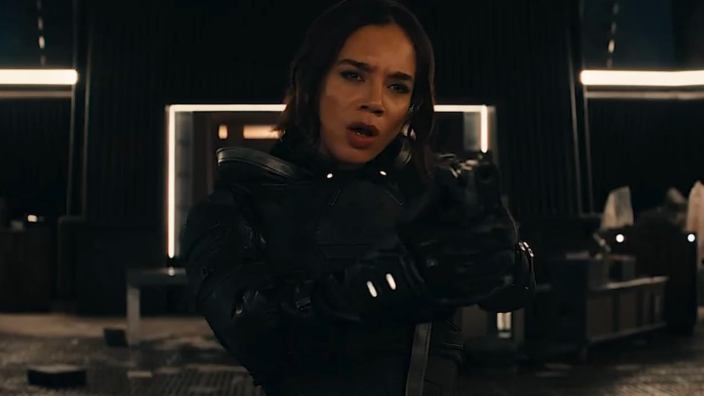

Ava Starr / Fantasma
Interpretada por: Hannah John-Kamen
Ava Starr, conhecida como Fantasma, possui a habilidade de se tornar intangível devido a um acidente quântico. Sua condição instável a torna uma arma poderosa, mas também uma pessoa em constante sofrimento. Em Thunderbolts, Ava busca controle sobre seus poderes e uma cura para sua aflição, enquanto enfrenta desafios que testam sua resistência física e emocional.